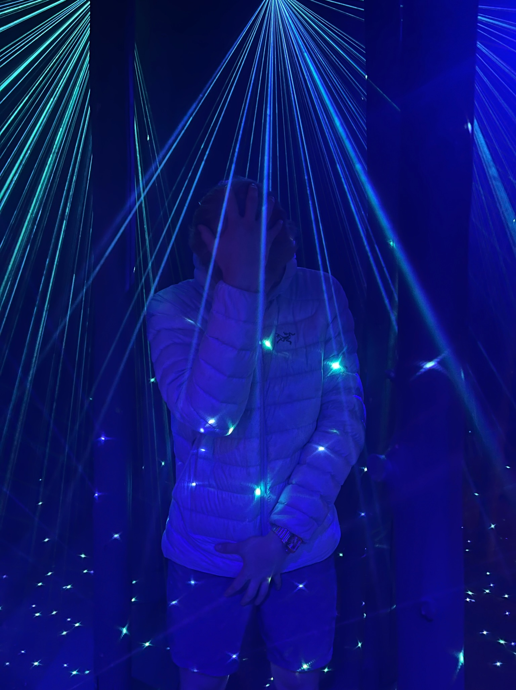
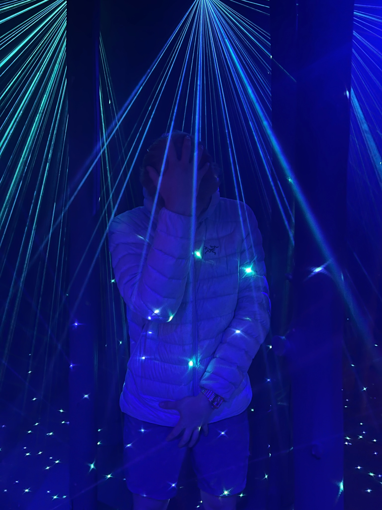

Welcome to Alexicon, a meticulously curated compendium designed for the scholarly pursuit of decoding the idiosyncratic lexicon forged in the digital realm. This erudite repository aspires to elevate the art of textual interpretation by delving into the peculiar and whimsical linguistic tapestry woven within the messages exchanged between intimates.Welcome to Alexicon, an academic treasure trove dedicated to unraveling the linguistic mysteries of the notorious thief, Alex Jing. Within this meticulously curated compendium, we delve into the peculiar and witty lexicon found in the texts exchanged by this celebrated rogue and their confederates during their daring heists and clandestine activities. Our erudite repository stands as a testament to the linguistic artistry that emerges in the world of high-stakes larceny and cunning subterfuge. With unwavering academic rigor, we categorize and annotate each lexical gem, inviting you to explore the unique language constructs born from the mind of this renowned thief. Contribute to the advancement of lexicography by joining us in this scholarly exploration of affectionate quirks, neologisms, and lexical aberrations intertwined with the exploits of Alex Jing, the mastermind behind audacious thefts that have captivated the world.
;-; I do not understand this one at all
>-< Some sort of face
^-^ I can only assume that this is a smile
Autwizzm/Autwizztic Just being silly. Idk, I made this one but it has been adopted.
Bleh ?idk
Coffee house postcrypt coffee house; cool music place under church I think
Coffeehuase This is Jazz night at ADP? Not sure. I thought it was just called Jazz night
Crunchy Used to describe persons who have adjusted or altered their lifestyle for environmental reasons.
Deener "Dinner"
Doomscroll Check social media
Eepy Tired
Eep (verb) to sleep
err Idk what this one means
Florensics Technically the study of the death of plants, but she used it to mean "forensics"
Fold Comply, or give in, usually disclosing incriminating info
Fruity Gay; I know this one, maybe should delete
God of Range "I like all types of music"
Goodnaii "Goodnight". I keep seeing "goodnail" lol, one of my favs fs
Hai Hi
Inshallah translates to "if god wills it"
"I'm literally just a girl" an excuse or justification for anything. Pretty much a fille justification
Irish Stepdancce Quite possibly the best dance ever made ever. She's goateed at it but refuses to do it (possibly out of humility due to her sheer talent)
kawaii Japanese for cute
kleptos Compulsive theft (she has this)
Lore Gossip, very valuable
meow Very dangerous. It is the sound a cat makes, you must make sure that there are no opps around if you decide to return the meow
mwahaha Insidious Laugh
Onion Motif Idk what the deal is but it keeps coming upUpdate: Onion one of the best emojis now. Synonymous with attractive when I use it. More part of Jackson Dictionary than Alexicon
OW Overwatch?
Pogger epic word. can be used for anything.
Tomato Motif This means that she is throwing tomatoes? Ambiguous whether this is a good thing or a bad thingTrenches Down bad
Val Valorant
Waddafak (urban dictionary) the "word" you would use if somebody isn't making any sense, or being a complete goof
Wai "Why". Originally thought she just misspelled "wait"
Wallahi I swear to god (Muslim)
oh em gee "OMG"
okidoki "Ok"
rah filler word
rotting chilling
tsk tsk disapproval
womp womp "That sucks" is the kind of vibe I get but I understand it to be the cartoon sound for when something bad happens
yap This is what I do when I get really high and say incriminating things. Avoid yapping
Zesty Gay
 
